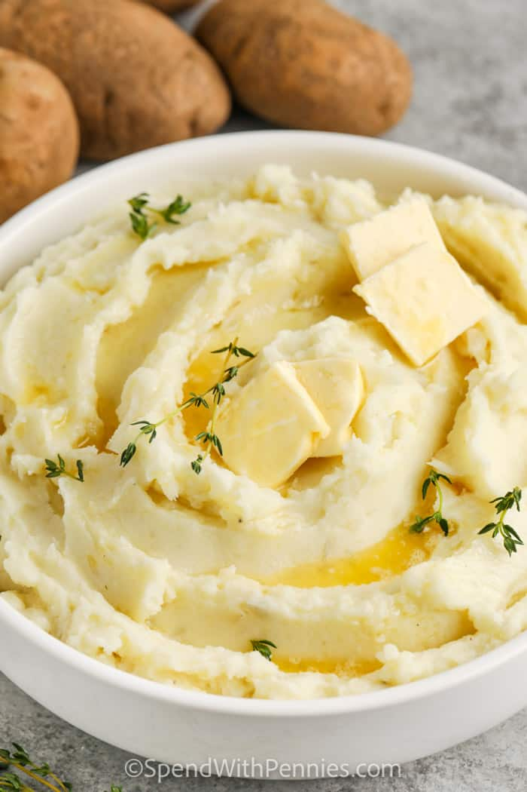

Home
Mashed Potatoes

Description
The most amazing mashed potatoes known in the universe!
Ingredients
-
4 pounds potatoes russet or Yukon gold
-
3 cloves garlic optional
-
1/3 cup melted salted butter
-
1 cup milk or cream
-
salt to taste
-
balck pepper to taste
Steps
-
Peel and quarter potatoes, place in a pot of cold salted water.
-
Add cloves of garlic (if using) & bring to a boil, cook uncovered
15 minutes or until fork-tender. Drain well.
-
Heat milk on the stove top (or in the microwave) until warm.
-
Add butter to the potatoes and begin mashing. Pour in heated
milk a little at a time while using a potato masher to reach desired consistency.
-
Season with salt and pepper. Serve hot.